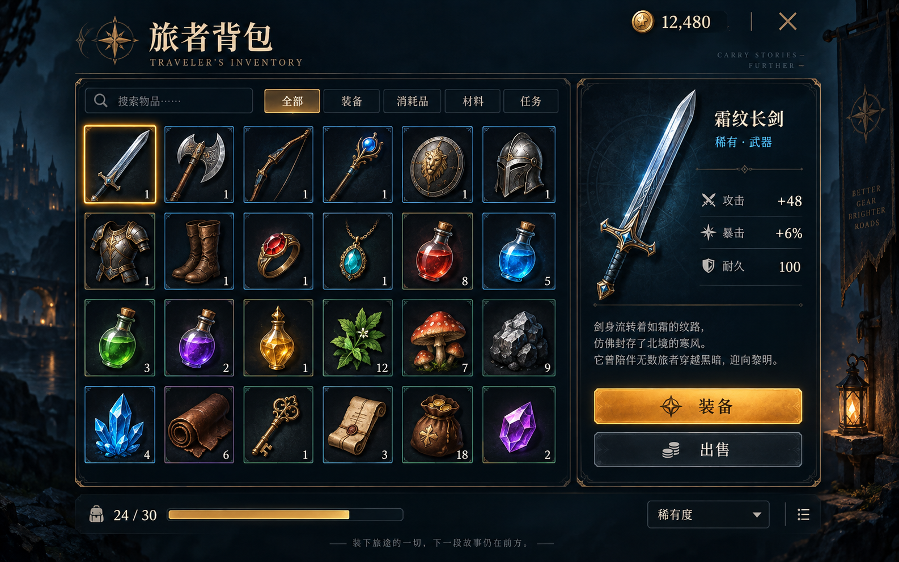

<!doctype html>
<html lang="zh-CN"><meta charset="utf-8"><meta name="viewport" content="width=device-width,initial-scale=1"><title>背包原图与实际网页对照</title>
<style>html,body{margin:0;background:#11151b;color:#ddd;font:14px system-ui}header{display:flex;align-items:center;gap:12px;padding:10px 16px;flex-wrap:wrap}button{color:#e8d8b7;background:#23303b;border:1px solid #887349;padding:7px 14px;cursor:pointer}main{margin:auto;position:relative;overflow:hidden}#stage{position:relative;width:1586px;height:992px;transform-origin:top left}iframe,img{position:absolute;inset:0;width:1586px;height:992px;border:0}#reference{pointer-events:none;opacity:.5}small{color:#aaa}a{color:#b9d8ef}</style>
<header><b>1586 × 992 原尺寸对照</b><button data-value="1">参考图</button><button data-value="0">实际网页</button><button data-value="0.5">叠加</button><label>参考图透明度 <input id="mix" type="range" min="0" max="1" step=".01" value=".5"></label><small>仅此对照页加载整张参考图；游戏页使用拆分控件。</small><a href="./index.html" target="_blank">打开交互网页</a></header>
<main id="frame"><div id="stage"><iframe src="./index.html" title="实际 FairyGUI 背包"></iframe></div></main>
<script>const mix=document.querySelector('#mix'),reference=document.querySelector('#reference');mix.oninput=()=>reference.style.opacity=mix.value;document.querySelectorAll('button').forEach(b=>b.onclick=()=>{mix.value=b.dataset.value;mix.oninput();});function fit(){const s=Math.min(innerWidth/1586,(innerHeight-document.querySelector('header').offsetHeight)/992);document.querySelector('#stage').style.transform='scale('+s+')';document.querySelector('#frame').style.width=1586*s+'px';document.querySelector('#frame').style.height=992*s+'px';}onresize=fit;fit();</script></html>
